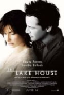

|
|
 |
|
Uma médica que morou em uma casa à beira de um lago passa a se corresponder por carta com o novo morador do local. Dirigido por Alejandro Agresti (Valentin) e com Keanu Reeves, Sandra Bullock e Christopher Plummer no elenco.
|
|
|
Ficha Técnica | Voltar
Título Original: The Lake House
Gênero: Drama
Tempo de Duração: 105 minutos
Ano de Lançamento (EUA): 2006
Site Oficial: The Lake House
Estúdio: Warner Bros. Pictures / Village Roadshow Pictures / Vertigo Entertainment
Distribuição: Warner Bros. Pictures
Direção: Alejandro Agresti
Roteiro: David Auburn, baseado em roteiro de Ji-na Yeo e Eun-Jeong Kim
Produção: Doug Davison e Roy Lee
Música: Rachel Portman, Prince e Paul M. van Brugge
Fotografia: Alar Kivilo
Desenho de Produção: Nathan Crowley
Direção de Arte: Kevin Kavanaugh e Shane Valentino
Figurino: Deena Appel
Edição: Alejandro Brodersohn e Lynzee Klingman
Efeitos Especiais: Rhythm & Hues
|
Elenco | Voltar
Keanu Reeves (Alex Wyler)
Sandra Bullock (Kate Forster)
Shohreh Aghdashloo (Anna Klyczynski)
Christopher Plummer (Simon Wyler)
Ebon Moss-Bachrach (Henry Wyler)
Willeke van Ammelrooy (Mãe de Kate)
Dylan Walsh (Morgan)
Lynn Collins (Mona)
Mike Bacarella (Mulhern)
Cynthia Kaye McWilliams (Vanessa)
Nora Newbrough (Marjorie)
Jason Wells (Costello)
Scott Elias (Doug)
Kevin Brennan (Garçom)
|
Sinopse | Voltar
Kate Forster (Sandra Bullock) é uma médica solitária, que morava em uma casa à beira de um lago. Hoje esta casa é ocupada por Alex Wyler (Keanu Reeves), um arquiteto frustrado. Kate passa a trocar cartas com Alex, com quem mantém um relacionamento à distância por 2 anos. É quando, ao se descobrirem apaixonados um pelo outro, eles buscam um meio de se encontrar.
|
|
|